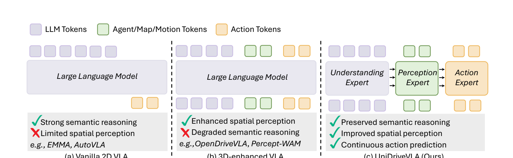
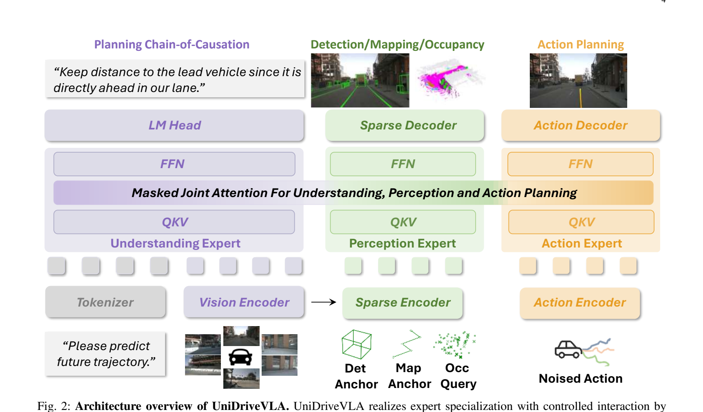
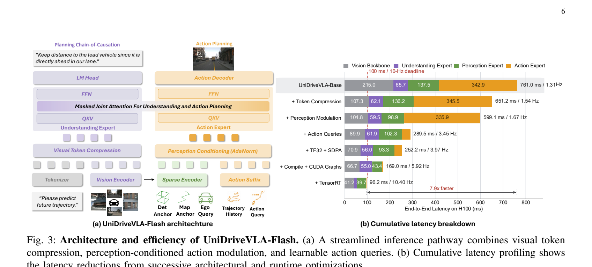
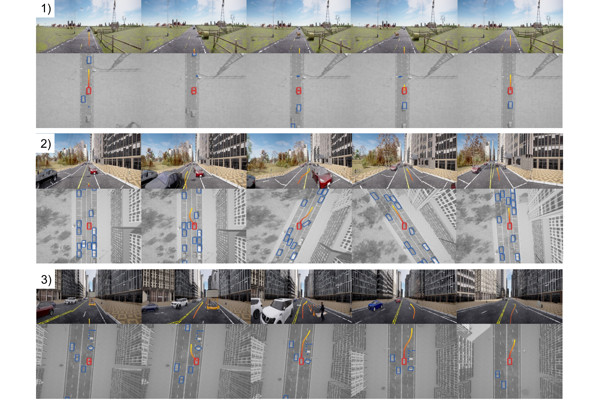

A · Understanding
Chain-of-Causation
The Understanding Expert writes causal driving reasoning and never sees later streams. ReSPECT penalizes LoRA updates that land in the dominant singular subspaces of pretrained weights.
Unifying Understanding, Perception, and Action Planning for Autonomous Driving
A Mixture-of-Transformers driving VLA that decouples heterogeneous tasks, preserves pretrained reasoning with ReSPECT, and plans continuously — including a 10.4 Hz real-time Flash variant.
1 Huazhong University of Science and Technology 2 Xiaomi EV 3 SKL-IOTSC, University of Macau
✉ Corresponding author.
Closed-loop rollouts on NeuroNCAP and Fail2Drive, plus open-loop nuScenes scenes in complex traffic, night, and rain.
Safety-critical closed-loop · stationary / frontal / side
Long-tail generalization · animals, parking, stop, crowd
Open-loop planning in dense urban scenes
Low-light open-loop planning
Wet-weather open-loop planning
Adapting a pretrained VLM for driving often pits spatial perception against semantic reasoning. A Mixture-of-Transformers gives Understanding, Perception, and Action their own projections and FFNs; Masked Joint Attention lets them talk only along U→P and {U,P}→A. ReSPECT then regularizes the Understanding Expert so driving adaptation does not overwrite pretrained reasoning.
The Understanding Expert writes causal driving reasoning and never sees later streams. ReSPECT penalizes LoRA updates that land in the dominant singular subspaces of pretrained weights.
The Perception Expert reads that semantic context and extracts detection, map, and occupancy queries from multi-scale VLM features — geometry without a shared decoder.
The Action Expert aggregates both streams and decodes a future ego trajectory. Flash compresses the same pathway to 10.4 Hz on one H100.

Semantic understanding, spatial perception, and action planning need different representations and losses. When they share one Transformer, their gradients compete. UniDriveVLA therefore uses a Mixture-of-Transformers: each expert owns its QKV, output projection, and FFN. Masked Joint Attention then lets information flow only along a directed hierarchy — Understanding stays causal and cannot see later streams; Perception may read Understanding; Action reads both.
Separating experts does not freeze the pretrained VLM. Driving-domain LoRA can still overwrite the singular subspaces that carry semantic reasoning. ReSPECT keeps the usual low-rank update ΔW = (α/r)BA, but penalizes the fraction of update energy that lands in the top-k input and output singular subspaces of the frozen weight. Sparse perception then extracts detection, map, and occupancy queries from multi-scale VLM features; the Action Expert folds that geometry into continuous trajectory decoding.

UniDriveVLA-Flash keeps the same expert split and speeds up the graph:
VisionZip compresses multi-view tokens, perception-conditioned normalization
modulates the action suffix without lengthening it, and learnable action
queries replace iterative flow-matching. With TF32, SDPA, torch.compile,
CUDA Graphs, and TensorRT, the full stack runs at 10.40 Hz on one H100
(96 ms, 7.91× vs. the 1.31 Hz baseline) with only a 0.05 m ST-P3 L2 increase.

UniDriveVLA leads matched open-loop and closed-loop planning protocols, remains competitive on spatial perception, and keeps driving-oriented understanding after domain adaptation.
Highest score and lowest collision rate in every interaction type. Side encounters record no collisions; the average collision rate drops nearly an order of magnitude versus prior VLAs (36.8% → 4.0%).
| Method | Stationary | Frontal | Side | Average | ||||
|---|---|---|---|---|---|---|---|---|
| NS ↑ | CR ↓ | NS ↑ | CR ↓ | NS ↑ | CR ↓ | NS ↑ | CR ↓ | |
| UniAD | 0.84 | 87.8% | 0.10 | 98.4% | 1.26 | 79.6% | 0.73 | 88.6% |
| ImpromptuVLA | 2.55 | 54.8% | 1.86 | 72.8% | 1.78 | 67.6% | 2.06 | 65.1% |
| ColaVLA | 3.54 | 32.3% | 3.16 | 51.6% | 3.75 | 26.4% | 3.48 | 36.8% |
| ImagiDrive-S | 4.15 | 33.8% | 2.45 | 74.0% | 3.88 | 26.8% | 3.49 | 44.9% |
| UniDriveVLA-Base | 4.89 | 2.2% | 4.59 | 9.8% | 5.00 | 0.0% | 4.83 | 4.0% |
100 matched route pairs keep the driving context fixed while shifting the long-tail object. In-distribution HM 85.40; generalization HM 71.94, +4.44 over TFv5 on the shifted split.
| Method | In-distribution | Generalization | ||||
|---|---|---|---|---|---|---|
| DS | SR | HM | DS | SR | HM | |
| ORION | 53.0 | 52.0 | 52.5 | 51.2 | 46.0 | 48.5 |
| SimLingo | 82.6 | 79.3 | 80.9 | 71.7 | 55.0 | 62.2 |
| TFv5 | 83.3 | 78.5 | 80.8 | 75.4 | 61.1 | 67.5 |
| UniDriveVLA-Base | 85.80 | 85.0 | 85.40 | 76.37 | 68.0 | 71.94 |

Under Think2Drive, UniDriveVLA posts the best Efficiency (198.86) and Driving Score (78.37) among listed methods, and ranks first in merge / overtake. LEAD expert data raises SR to 87.16% and DS to 94.50, with mean multi-ability 78.99%.
| Method | Data | Eff. ↑ | SR ↑ | DS ↑ | Ability mean ↑ |
|---|---|---|---|---|---|
| ReCogDrive | Think2Drive | 138.18 | 45.45 | 71.36 | 42.03 |
| ORION | Think2Drive | 151.48 | 54.62 | 77.74 | 54.72 |
| UniDriveVLA-Base | Think2Drive | 198.86 | 51.82 | 78.37 | 51.53 |
| TFv6 (vision-only) | LEAD | — | 79.50 | 91.60 | — |
| UniDriveVLA-Base | LEAD | 200.27 | 87.16 | 94.50 | 78.99 |
Without ego-state input, UniDriveVLA-Large reaches the lowest average L2 under both ST-P3 (0.49 m) and UniAD (0.88 m).
| Method | ST-P3 L2 ↓ | ST-P3 CR ↓ | UniAD L2 ↓ | UniAD CR ↓ |
|---|---|---|---|---|
| FSDrive | 0.53 | 0.17 | 0.96 | 0.40 |
| SparseDrive‡ | 0.55 | 0.08 | 0.99 | 0.21 |
| UniDriveVLA-Base | 0.50 | 0.11 | 0.91 | 0.27 |
| UniDriveVLA-Large | 0.49 | 0.13 | 0.88 | 0.31 |
The Perception Expert reports detection, mapping, and motion on nuScenes val. Understanding stays competitive after driving adaptation, with the highest Lingo-Judge of 75.2.
| Method | Det mAP ↑ | NDS ↑ | Map mAP ↑ | minADE ↓ | Lingo-Judge ↑ |
|---|---|---|---|---|---|
| VAD | 0.276 | 0.397 | 0.476 | — | — |
| ReCogDrive (8B) | — | — | — | — | 67.2 |
| RoboTron-Drive | — | — | — | — | 69.2 |
| UniDriveVLA-Base | 0.405 | 0.466 | 0.433 | 0.801 | — |
| UniDriveVLA (8B) | 0.414 | 0.483 | 0.429 | 0.842 | 75.2 |
Replacing a shared-weight decoder with Mixture-of-Transformers lifts LingoQA from 60.0 to 74.2 and cuts the NeuroNCAP collision rate from 31.1% to 4.0%, while detection NDS and map mAP also rise.
| Architecture | General VQA ↑ | LingoQA ↑ | Det NDS ↑ | Map mAP ↑ | NS ↑ | CR ↓ |
|---|---|---|---|---|---|---|
| Shared-weight decoder | 49.18 | 60.0 | 0.437 | 0.407 | 3.45 | 31.1% |
| Mixture-of-Transformers | 50.62 | 74.2 | 0.466 | 0.433 | 4.83 | 4.0% |
Each row includes all preceding optimizations. Planning is ST-P3 average L2 / CR without ego-status. The full TensorRT stack is the Flash configuration.
| Configuration | Latency ↓ | Hz ↑ | Speedup ↑ | ST-P3 L2 / CR |
|---|---|---|---|---|
| UniDriveVLA-Base | 0.761 s | 1.31 | 1.00× | 0.50 / 0.11 |
| + Visual token compression | 0.651 s | 1.54 | 1.17× | 0.50 / 0.13 |
| + Perception modulation | 0.599 s | 1.67 | 1.27× | 0.58 / 0.15 |
| + Learnable action queries | 0.290 s | 3.45 | 2.63× | 0.55 / 0.15 |
| + TF32 + SDPA | 0.252 s | 3.97 | 3.02× | 0.54 / 0.14 |
| + Compile + CUDA Graphs | 0.169 s | 5.92 | 4.50× | 0.55 / 0.13 |
| + TensorRT (Flash) | 0.096 s | 10.40 | 7.91× | 0.55 / 0.13 |
Occupancy is the largest closed-loop safety increment in the perception ablation: NeuroNCAP score moves from 4.04 to 4.83 and collision rate from 19.8% to 4.0%. ReSPECT at (βVis, βLM) = (0.010, 0.003) raises Lingo-Judge from 66.8 (plain LoRA) to 74.2 and the NeuroNCAP score from 4.09 to 4.83. After driving adaptation the 8B model still leads evaluated VLAs on MMMU (47.2), VLMsAreBlind (29.6), and ChartQA (65.7).
@article{li2026unidrivevla,
title={UniDriveVLA: Unifying Understanding, Perception, and Action Planning for Autonomous Driving},
author={Li, Yongkang and Zhu, Yu and Zhou, Lijun and Yan, Sixu and Liao, Bencheng and Yan, Tianyi and Xiong, Kaixin and Zhu, Zhenxin and Xie, Hongwei and Sun, Haiyang and Wang, Bing and Chen, Guang and Liu, Wenyu and Ye, Hangjun and Wang, Xinggang},
journal={arXiv preprint arXiv:2604.02190},
year={2026}
}